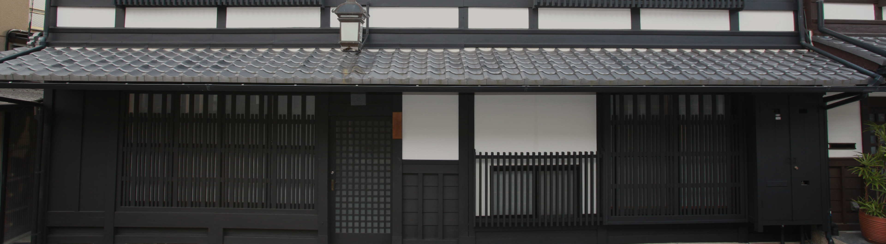
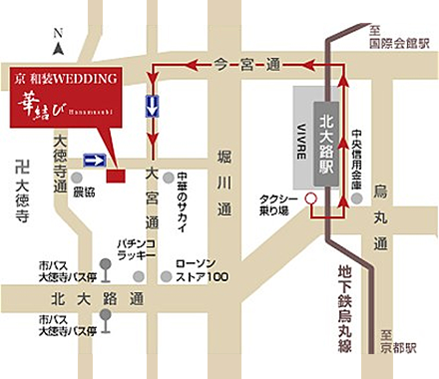

アクセス・店舗案内
店舗案内
華結びは明治から続く、京都でも有数の歴史ある老舗衣装店が運営しております。
京都の雰囲気が漂う京町家（店舗）にて、ゆっくりご試着して頂けます。

京 和装WEDDING 華結び
| 住所 | 〒603-8217 京都府京都市北区紫野上門前町23 |
|---|---|
| TEL | 075-491-2010 |
| 営業時間 | 10:00〜18:00 |
- ※ご来店は予約制となっております。来店予約フォームかお電話にてご予約をお願い申し上げます。
- ※当日のご予約はお断りさせて頂く場合がございます。できるだけ事前のご予約をお奨め致します。
- ※土日祝のメールでのお問い合わせは来店状況により、ご連絡が翌営業日となる場合がございます。

電車・バスでお越しの方
JR京都駅より
【電車】
地下鉄烏丸線（国際会館行）に乗り換え、「京都駅」〜「北大路駅」乗車（所要時間・約13分）。「北大路駅」下車後、タクシーにて5分。
【バス】
市バス206系統「千本通北大路バスターミナル行き」に乗車（所要時間・約35分）、バス停「大徳寺前」で下車、徒歩5分。
阪急烏丸駅より
【電車】
地下鉄烏丸線（国際会館行）に乗り換え、「四条駅」〜「北大路駅」乗車（所要時間・約9分）。「北大路駅」下車後、タクシーにて5分。
【バス】
26番出口、きらっ都プラザ前のバス停「四条烏丸駅」から、市バス12系統「金閣寺立命館大学前行き」に乗車（所要時間・約30分）。バス停「大徳寺前」で下車、徒歩5分。
お車でお越しの方
駐車場のご用意がございます。ご来店の際は事前のご予約の上、ご来店くださいませ。